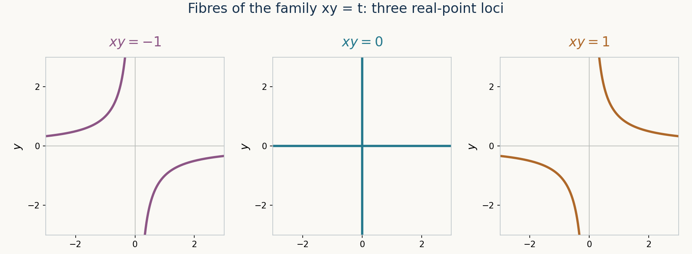

Fibre products and base change
Written by OpenAI GPT-6.1 Sol in Codex at Ultra; writing-AI self-check completed. No independent review is claimed. Original exposition, proofs, exercises and figures: CC0.
A fibre product makes two maps to the same base agree. On test schemes its points are pairs of compatible maps. On affine charts its ring is a tensor product. These descriptions fit together because the compatible-map functor is a Zariski sheaf with affine open charts. They also explain why the underlying points of a scheme fibre product need not be just pairs of underlying points: there can be several ways to combine their residue fields.
The prerequisites are Affine schemes, Schemes, gluing and immersions, and The functor of points and representability. We use their written affine mapping, local-point and representability theorems. Rings and schemes remain arbitrary; no finiteness or reducedness assumption is implicit.
1. Constructing the product over a base
For maps \(f:X\to S\) and \(g:Y\to S\), a fibre product is a scheme \(P=X\times_S Y\) with maps \(p:P\to X\), \(q:P\to Y\), such that \(fp=gq\) and, for every test scheme \(T\),
\[ \operatorname{Hom}(T,P)\cong \operatorname{Hom}(T,X)\times_{\operatorname{Hom}(T,S)}\operatorname{Hom}(T,Y). \tag{1.1} \]The bijection sends a map to its two composites. Thus a compatible pair factors through \(P\) in exactly one way. Yoneda shows that a fibre product, with its projections, is unique up to a unique isomorphism.
Theorem 1.1. Fibre products of schemes exist. In the affine case,
\[ \operatorname{Spec}A\times_{\operatorname{Spec}R}\operatorname{Spec}B \cong\operatorname{Spec}(A\otimes_R B). \tag{1.2} \]If \(U\subset X\), \(V\subset Y\), \(W\subset S\) are open subschemes with \(f(U),g(V)\subset W\), the induced map identifies
\[ U\times_W V\cong p^{-1}U\cap q^{-1}V \subset X\times_S Y \tag{1.3} \]as an open subscheme. Compatible affine charts of this form cover the fibre product.
Proof. The affine formula is the preceding affine lesson's Corollary 4.2. To recall its essential scope, a map from any test scheme to \(\operatorname{Spec}(A\otimes_R B)\) corresponds to a ring map into its global section ring; tensor universality identifies that with the required two maps. It is therefore a fibre product in all schemes, not just in affine schemes.
In general define \(F(T)\) to be the right side of (1.1), with pullback by composition. Compatible local pairs glue separately to maps \(T\to X\) and \(T\to Y\). Their two maps to \(S\) agree locally, hence globally by morphism gluing. Uniqueness also holds separately. Thus \(F\) is a Zariski sheaf.
Choose an affine open cover \((W_i)\) of \(S\), and affine open covers \((U_{ij})\) of \(f^{-1}W_i\) and \((V_{ik})\) of \(g^{-1}W_i\). For each triple, compatible pairs factoring through \(U_{ij},V_{ik}\) form a subfunctor represented by their affine tensor fibre product over \(W_i\). For a pair \((a,b)\in F(T)\), its membership open is \(a^{-1}U_{ij}\cap b^{-1}V_{ik}\). Factorization through an open subscheme is determined by this image condition, so this description works after every test map into \(T\) and proves openness. These membership opens cover \(T\): first choose a base chart around the common image of a point, then charts around each of its two images. The preceding lesson's Theorem 4.1 now represents \(F\), proving existence and the asserted affine covering.
To prove (1.3), a map from \(T\) into the displayed open on the right is a compatible pair landing in \(U\) and \(V\). Their composites into \(W\) are equal, because their composites into \(S\) are equal and \(W\to S\) is a monomorphism. Conversely such a pair defines by (1.1) a map landing in that open. This proves its fibre-product mapping property and hence the canonical isomorphism. \(\square\)
The scheme \(\operatorname{Spec}\mathbb Z\) is terminal, since there is exactly one unital map from \(\mathbb Z\) to any global section ring. Ordinary products are fibre products over it. For a specified base \(S\), the product in \(S\)-schemes is \(\times_S\).
Lemma 1.2 (computational identities). For an \(R\)-algebra \(B\), an ideal \(I\subset R\), and a multiplicative subset \(M\subset R\), there are natural isomorphisms
\[ B\otimes_R R[z_1,\ldots,z_n]\cong B[z_1,\ldots,z_n],\qquad B\otimes_R(R/I)\cong B/IB, \] \[ B\otimes_R M^{-1}R\cong M^{-1}B. \tag{1.4} \]Here \(M^{-1}B\) means localization at the image of \(M\), and \(IB\) is the ideal generated by the image of \(I\).
Proof. In each case maps from the proposed ring into a commutative ring \(C\) correspond to compatible maps from the two tensor factors. A polynomial factor chooses arbitrary images of its variables; a quotient factor forces the image of \(I\) to vanish; a localization factor forces the image of \(M\) to be invertible. These are exactly the defining properties of the rings on the right. The tensor universal property supplies inverse maps with these prescribed generators and hence the isomorphisms. Explicitly in the quotient case, \(b\otimes\bar r\mapsto\overline{br}\), with inverse \(\bar b\mapsto b\otimes1\); in the localization case, \(b\otimes(r/m)\mapsto br/m\), with inverse taking \(b/m\) to \(b\otimes(1/m)\). \(\square\)
Thus a presentation by variables and equations can be base changed by changing coefficients and retaining those variables and equations. A quotient or localization may yield the zero ring; the corresponding fibre product is then empty.
2. The extra residue-field information in a point
For a point \(z\in X\times_S Y\), put \(x=p(z)\), \(y=q(z)\), \(s=f(x)=g(y)\). The two projections give compatible embeddings of \(\kappa(x)\) and \(\kappa(y)\) into \(\kappa(z)\). Their tensor map has a prime kernel. This is the extra datum of the point.
Theorem 2.1 (points and residue fields). Points of \(X\times_S Y\) correspond bijectively to quadruples
\[ (x,y,s,\mathfrak r),\qquad f(x)=s=g(y),\quad \mathfrak r\in\operatorname{Spec}\bigl(\kappa(x)\otimes_{\kappa(s)}\kappa(y)\bigr). \tag{2.1} \]The residue field of the corresponding point is the fraction field of \((\kappa(x)\otimes_{\kappa(s)}\kappa(y))/\mathfrak r\).
Proof. First work in affine charts \(X=\operatorname{Spec}A\), \(Y=\operatorname{Spec}B\), \(S=\operatorname{Spec}R\), and write \(C=A\otimes_R B\). Fix primes \(\mathfrak p\subset A\), \(\mathfrak q\subset B\), contracting to the same \(\mathfrak s\subset R\). The primes \(P\subset C\) with these exact contractions contain the images of \(\mathfrak p\) and \(\mathfrak q\), and avoid the images of \(A\setminus\mathfrak p\) and \(B\setminus\mathfrak q\). Quotient by the former and localize at the latter. By tensor universality the resulting ring is
\[ D=\kappa(\mathfrak p)\otimes_{\kappa(\mathfrak s)}\kappa(\mathfrak q). \tag{2.2} \]Indeed each factor is the fraction field of its prime quotient. The two maps from \(R\) kill \(\mathfrak s\), and all nonzero elements of \(R/\mathfrak s\) are already units in both fields, so balancing over \(R\) becomes balancing over \(\kappa(\mathfrak s)\).
Quotient and localization prime correspondence send every such \(P\) to a unique prime of \(D\). Conversely any prime of \(D\) contracts to zero in each field factor: the induced unital map from a field to the nonzero domain \(D/\mathfrak r\) is injective. Its contraction to \(C\) therefore has exactly \(\mathfrak p,\mathfrak q\) as contractions. These operations are inverse by the prime-correspondence theorem, not just maps in opposite directions. Moreover, \(D/\mathfrak r\) is a localization of \(C/P\), so they have the same fraction field. This proves the residue-field statement.
For arbitrary schemes, choose compatible affine charts around \(x,y,s\). Their tensor fibre product is an open neighbourhood of every point with these projections, by (1.3). The affine bijection applies there. Its extra prime is intrinsically the kernel of \(\kappa(x)\otimes_{\kappa(s)}\kappa(y)\to\kappa(z)\), so changing the charts preserves it. Conversely the affine construction from a quadruple produces a point with this kernel; on two choices of charts, restrict to a common compatible affine neighbourhood of \(x,y,s\). The same prime-correspondence bijection identifies the produced points there. Thus the construction is independent, surjective and injective globally. \(\square\)
Example 2.2 (a point that splits). There is an isomorphism
\[ \mathbb C\otimes_{\mathbb R}\mathbb C \cong\mathbb C[z]/(z^2+1)\cong\mathbb C\times\mathbb C. \tag{2.3} \]The second map evaluates at \(i\) and \(-i\). Its inverse follows from the two comaximal factors \(z-i,z+i\), whose difference \(2i\) is a unit. Consequently the product of the two one-point schemes over \(\mathbb R\) has two points. Equivalently, the tensor map \(a\otimes b\mapsto(ab,a\bar b)\) is the isomorphism (2.3), using the first factor as coefficient field.
Example 2.3 (two generic projections). On \(\mathbb A^1_k\times_k\mathbb A^1_k=\operatorname{Spec}k[u,v]\), the prime \((0)\) and the prime \((v-u)\) both contract to \((0)\) in \(k[u]\) and in \(k[v]\). They are distinct: one is the generic point of the plane, the other the generic point of the diagonal. Thus the natural map from underlying points to pairs of points is not injective, over every field \(k\). By Theorem 2.1, over that generic pair one sees the different primes in \(k(u)\otimes_k k(v)\).
3. Fibres as schemes
For \(f:X\to S\) and \(s\in S\), its scheme-theoretic fibre is
\[ X_s=X\times_S\operatorname{Spec}\kappa(s), \]regarded as a scheme over \(\kappa(s)\). The map to \(S\) uses the canonical residue-field point, with its identity residue embedding. For a geometric point \(\bar s:\operatorname{Spec}\Omega\to S\), where \(\Omega\) is algebraically closed, the geometric fibre is \(X_{\bar s}=X\times_S\operatorname{Spec}\Omega\). It is the base change of \(X_s\) by the given embedding \(\kappa(s)\hookrightarrow\Omega\). If \(S\) is irreducible, the fibre over its generic point is its generic fibre.
Theorem 3.1 (topology and local rings of a fibre). The projection \(X_s\to X\) is a homeomorphism onto the subspace \(f^{-1}(s)\). At a point \(x\) over \(s\), under this identification,
\[ \mathcal O_{X_s,x}\cong \mathcal O_{X,x}/\mathfrak m_s\mathcal O_{X,x} \cong\mathcal O_{X,x}\otimes_{\mathcal O_{S,s}}\kappa(s). \tag{3.1} \]Proof. Choose an affine neighbourhood \(\operatorname{Spec}R\) of \(s\), corresponding to \(\mathfrak s\), and an affine \(\operatorname{Spec}A\) inside its inverse image. By (1.4), the fibre ring on this chart is
\[ A\otimes_R\kappa(\mathfrak s)=M^{-1}A/\mathfrak s M^{-1}A, \qquad M=R\setminus\mathfrak s. \tag{3.2} \]Its primes correspond exactly to primes \(\mathfrak p\subset A\) contracting to \(\mathfrak s\): containment of \(\mathfrak s\) and avoidance of \(M\) give the two inclusions. Localization identifies its spectrum, before quotient, homeomorphically with its image subspace; its distinguished opens are intersections with the opens \(D(a)\) of \(\operatorname{Spec}A\). Quotient then selects a closed subspace in that localization. Hence the resulting topology is precisely the topology induced from \(\operatorname{Spec}A\) on this fibre set.
Localizing (3.2) at the corresponding prime gives \(A_{\mathfrak p}/\mathfrak s A_{\mathfrak p}\). The map \(R\to A_{\mathfrak p}\) extends to \(R_{\mathfrak s}\), and the extended ideal is exactly \(\mathfrak m_s\mathcal O_{X,x}\). This proves (3.1), including its tensor form by the quotient identity. Such affine source charts cover \(f^{-1}(s)\), and their fibre charts cover \(X_s\) by Theorem 1.1. The local homeomorphisms and stalk formulas agree on intersections and give the global assertion. \(\square\)
The fibre's topology is the expected fibre topology, but its rings contain more information. Even a fibre consisting of one point can be a field extension or a nonreduced ring.
Example 3.2 (Gaussian integer fibres). Write \(\mathbb Z[i]=\mathbb Z[z]/(z^2+1)\). The fibre over a prime \((p)\) of \(\operatorname{Spec}\mathbb Z\) is \(\operatorname{Spec}\mathbb F_p[z]/(z^2+1)\). In three cases:
- At \(p=2\), \(z^2+1=(z+1)^2\), so it is one nonreduced point with ring \(\mathbb F_2[\delta]/(\delta^2)\).
- At \(p=3\), the polynomial has no root in \(\mathbb F_3\), so it is irreducible of degree two. The fibre is one reduced point with field \(\mathbb F_9\).
- At \(p=5\), the two distinct roots are \(2,-2\), so the fibre ring is \(\mathbb F_5\times\mathbb F_5\), giving two reduced points.
All three rings have vector-space dimension two over the residue field of the base. This dimension does not equal the number of underlying points in the first two cases.
Example 3.3 (a family of curves). For \(X=\operatorname{Spec}k[x,y,t]/(xy-t)\to\operatorname{Spec}k[t]\), the fibre at a \(k\)-rational parameter \(a\) is \(\operatorname{Spec}k[x,y]/(xy-a)\). If \(a\ne0\), \(x\) is a unit with \(y=a/x\), so the ring is \(k[x,x^{-1}]\). At \(a=0\) it is \(k[x,y]/(xy)\), the union of the two coordinate axes with reduced structure: \((x)\cap(y)=(xy)\) by polynomial coefficient comparison, and an intersection of prime ideals is radical. The generic fibre is \(\operatorname{Spec}k(t)[x,y]/(xy-t)\cong\operatorname{Spec}k(t)[x,x^{-1}]\). This computation uses the generic parameter as a nonzero element of the field, not as an unspecified closed value.

Figure 1. The real-point loci of three fibres in Example 3.3, with \(k=\mathbb R\), shown in fixed coordinates on \([-3,3]^2\). The central fibre has the two coordinate axes; each nonzero fibre has equation \(xy=a\) and coordinate ring \(\mathbb R[x,x^{-1}]\). This Euclidean plot depicts real-valued points only, not the full scheme space or its Zariski topology.
4. Changing the base and retaining morphism properties
For \(S'\to S\), base change sends an \(S\)-scheme \(X\) to \(X_{S'}=X\times_S S'\), with projection to \(S'\). An \(S\)-morphism \(a:X\to Y\) induces \(a_{S'}:X_{S'}\to Y_{S'}\), by applying (1.1) to its composite with the projection and the shared map to \(S'\). Uniqueness in that property gives functoriality.
Iterating base change gives a canonical isomorphism
\[ (X\times_S S')\times_{S'}S''\cong X\times_S S''. \tag{4.1} \]Both sides have, on every test scheme, the same data: a map to \(X\) and a compatible map to \(S''\). The same reasoning identifies \(X_{S'}\) with \(X\times_Y Y_{S'}\) when studying the base change of \(a:X\to Y\). These identities are isomorphisms respecting the displayed projections, not literal equality of independently constructed objects.
A property of morphisms is stable under base change when the property of \(X\to Y\) implies it for every projection \(X\times_Y T\to T\). It is stable under composition when two composable morphisms having it have a composite having it.
Theorem 4.1. Surjective morphisms, open immersions and closed immersions are stable under arbitrary base change and under composition. Immersions are also stable under arbitrary base change.
Proof. For an open immersion \(U\to Y\) and \(T\to Y\), formula (1.3) identifies its pullback with the open subscheme given by the inverse image of \(U\) in \(T\). Composing two open inclusions again gives an open inclusion with restricted structure sheaf.
For a closed immersion \(Z\to Y\), choose an affine \(W=\operatorname{Spec}R\) in \(Y\). Its restriction over \(W\) is a closed immersion with the same local-generation condition on its kernel, so the preceding lesson's Theorem 3.1 identifies it with \(\operatorname{Spec}(R/I)\). Cover the inverse image of \(W\) in \(T\) by affine opens \(\operatorname{Spec}B\). Its pullback there is \(\operatorname{Spec}(B/IB)\to\operatorname{Spec}B\), a closed immersion. This local description proves the global conditions: the image is the closed inverse image of the original closed subset; the projection is locally a homeomorphism onto that image and these identifications give a global homeomorphism; structure-map surjectivity holds on stalks; its kernel is locally generated by the images of the elements of \(I\). Thus the pullback is a closed immersion. Notice that tensoring \(I\hookrightarrow R\) need not stay injective; the new ideal is the image ideal \(IB\).
For composition of two closed immersions \(Z\to Y\to X\), restrict over an affine \(\operatorname{Spec}R\subset X\). The first source is \(\operatorname{Spec}(R/I)\), and applying Theorem 3.1 once more makes the next source a quotient spectrum of \(R/I\). The composite is consequently the spectrum of a quotient of \(R\). These affine local descriptions give the global closed-immersion conditions as above.
For surjectivity, let \(X\to Y\) be surjective and take \(t\in T\), with image \(y\in Y\). Choose \(x\in X\) over \(y\). The algebra \(\kappa(x)\otimes_{\kappa(y)}\kappa(t)\) is nonzero. Indeed choose a basis of the vector space \(\kappa(x)\) over \(\kappa(y)\) containing \(1\); after tensoring it is a direct sum of copies of \(\kappa(t)\), and \(1\otimes1\) is nonzero. A nonzero unital ring has a maximal ideal, hence a prime. Theorem 2.1 therefore supplies a point of \(X\times_Y T\) over \(t\). This proves surjectivity after base change. Composition of surjective maps is surjective on underlying sets.
Finally an immersion factors as a closed immersion into an open subscheme. Base change this factorization, using (4.1); the two cases just proved remain closed and open immersions. \(\square\)
For example, scheme-theoretic inverse image of an affine closed subscheme cut out by \(I\) is cut out after base change by \(IB\). Intersection of two affine closed subschemes cut out by \(I,J\subset R\) is consequently \(\operatorname{Spec}R/(I+J)\). It records the summed equations, not just their common set of zeros.
5. Exercises
- Easy. Compute \(\mathbb Q(i)\otimes_{\mathbb Q}\mathbb Q(i)\), its spectrum, and its two projections to \(\operatorname{Spec}\mathbb Q(i)\).
- Easy. Compute all rational-parameter fibres and the generic fibre of \(xy=t\). Show the zero fibre is reduced and reducible.
- Medium. Exhibit two different points of \(\mathbb A^1_k\times_k\mathbb A^1_k\) with the same two projections, for an arbitrary field \(k\).
- Medium. Prove surjectivity after arbitrary base change directly with the point description. Explain why existence of a pair of points alone is not the proof.
- Medium. Give a morphism whose scheme-theoretic fibre has one point while a geometric fibre over that point has two. Compute both rings and the map between the fibres.
- Medium. Pull back the closed subscheme \(\operatorname{Spec}k[t]/(t^2)\subset\mathbb A^1_k\) along \(\mathbb A^1_k\to\mathbb A^1_k\) given by \(t=u^3\). Compute the ring and ideal. Check that pulling back \((t^2)\hookrightarrow k[t]\) along the point \(t=0\) does not preserve its injection.
6. Solutions
Solution 1. Using the first copy as coefficient field, the tensor ring is \(\mathbb Q(i)[z]/(z^2+1)\). The two roots \(i,-i\) give the isomorphism with \(\mathbb Q(i)\times\mathbb Q(i)\). Evaluation has inverse obtained from the two interpolation polynomials \((z+i)/(2i)\) and \((i-z)/(2i)\), which are complementary idempotents. Thus its spectrum consists of two disjoint field points. In the formula \(a\otimes b\mapsto(ab,a\bar b)\), the first ring inclusion is \(a\mapsto(a,a)\), the second \(b\mapsto(b,\bar b)\). Each point projects to the sole point in each factor, but its second residue-field map is respectively the identity or conjugation.
Solution 2. Tensor with \(k[t]/(t-a)=k\) to obtain \(k[x,y]/(xy-a)\). For \(a\ne0\), sending \(x\) to \(x\) and \(y\) to \(a/x\) identifies this with \(k[x,x^{-1}]\); its inverse sends \(x^{-1}\) to \(y/a\). For \(a=0\), the ideals \((x)\) and \((y)\) in \(k[x,y]\) are prime, and their intersection is \((xy)\): divisibility by both variables forces every monomial to contain both. Hence \((xy)\) is radical, while neither variable is zero modulo it and their product is zero. The fibre is reduced and has two irreducible components. For the generic fibre tensor with \(k(t)\); its nonzero parameter gives \(k(t)[x,x^{-1}]\) by the same inverse formulas.
Solution 3. In \(k[u,v]\), both \((0)\) and \((v-u)\) are prime. The second quotient is \(k[u]\), so contraction to either one-variable subring is zero. Their first contractions are also zero. They therefore give distinct points projecting to the same generic pair. The product's underlying set cannot be identified with the product set by its projections. This includes finite fields.
Solution 4. For \(t\) in the new base, choose \(x\) above its old-base image \(y\). The tensor of the two residue fields over \(\kappa(y)\) is nonzero by the vector-space basis argument in Theorem 4.1. A maximal ideal exists, so Theorem 2.1 gives a point over \((x,t)\). This makes the new map onto on every point. The pair alone would omit the prime required in the point classification; the nonzero tensor and its prime are what complete the existence argument. This reasoning does not claim uniqueness of the lifted point.
Solution 5. Take \(\operatorname{Spec}\mathbb C\to\operatorname{Spec}\mathbb R\). Its fibre over the sole base point is \(\operatorname{Spec}\mathbb C\), one point. For the geometric point \(\operatorname{Spec}\mathbb C\to\operatorname{Spec}\mathbb R\), the geometric fibre has ring \(\mathbb C\otimes_{\mathbb R}\mathbb C\cong\mathbb C\times\mathbb C\), hence two points. The projection to the original fibre is induced by the first-factor inclusion \(a\mapsto(a,a)\) under the chosen tensor isomorphism, so both geometric points map to the original point. The new residue field admits two compatible embeddings of the original extension, recorded by the two factors.
Solution 6. Formula (1.4) gives \(k[u]\otimes_{k[t]}k[t]/(t^2)=k[u]/(u^6)\). Its defining ideal in the new affine line is \((u^6)\), since \(t^2\) maps to \(u^6\). Its sole point is nonreduced, with a nilpotent of order six. At \(t=0\), the tensor of the module \((t^2)\) with \(k\) is \((t^2)/(t^3)\cong k\), nonzero. Its map to \(k[t]\otimes_{k[t]}k=k\) is zero because \(t^2\) maps to zero. Thus the original injection becomes a noninjective map; its image ideal is zero, as required for this point pullback. Taking the image, rather than identifying the tensor module with an ideal, is essential.
Proof dependencies
Affine fibre products use the full arbitrary-test-space mapping proof in the affine lesson. General existence uses the preceding representability criterion, whose openness and sheaf hypotheses are verified here. Point classification uses ordinary quotient and localization prime correspondence from the written internal commutative algebra lessons; the inverse correspondences and residue fields are checked explicitly. Closed-immersion base change and composition use the preceding affine quotient classification and the explicit tensor identities. No flatness, descent, intersection multiplicity or cohomology theorem is assumed.
References
- [Stacks] The Stacks project authors, The Stacks project, read in the AI Integrated Stacks Project English edition: Schemes, Tag 01JM, Tag 01JQ, Tag 01JR, Tag 01JS, Tag 01JT, Tag 01JY, and Tag 01K1; Morphisms of Schemes, Tag 01S0 and Tag 01S1.
- [Vakil] Ravi Vakil, The Rising Sea: Foundations of Algebraic Geometry, public draft of 27 July 2024, Sections 10.1–10.4. Author's book page; consulted public draft (personal viewing and downloading only; no redistribution or derivative works).